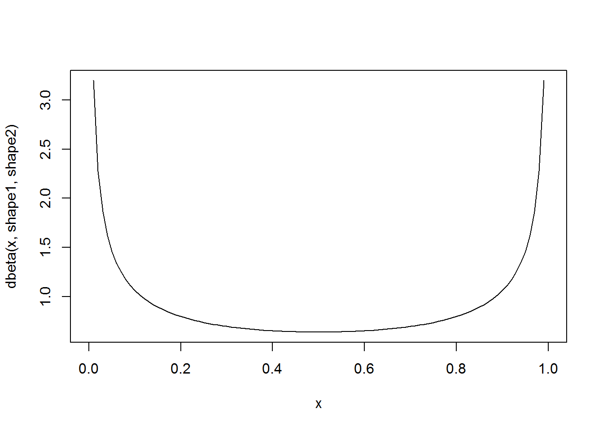

Working with Probabilities
NRES 746
August 31, 2016
Note: some materials borrowed from White and Morgan’s “STATISTICAL MODELS IN ECOLOGY USING R” course
In the last class, we reviewed basic programming in R, using basic constructs like the programming loop (e.g., “for”, “while”) and random sampling (e.g., using the ‘sample’ function in R) to build our own analyses from first principles. We began the course this way because the ability to understand, use, and build algorithms is absolutely fundamental to modern data analysis.
Also fundamental to modern data analysis is an ability to work with probabilities. Again, many of you will find this a very basic review, but I really want to ensure that all of us are working with solid foundations before we venture into more advanced topics.
The central points:
- Most traditional statistics utilize tricks & assumptions to ensure the data follow a particular distribution (usually normal)
- With more computational power, we are much less limited and can model alternative distributions more easily
Basic probability rules
Classic Urn Example
Consider an Urn filled with blue, red, and green spheres. To make the example more concrete, assume the following:
- red: 104
- blue: 55
- green: 30
n_red <- 104
n_blue <- 55
n_green <- 30
allSpheres <- c(n_red,n_blue,n_green)
names(allSpheres) <- c("red","blue","green")What is the probability of drawing a blue sphere?
P_blue <- allSpheres["blue"]/sum(allSpheres)
P_blue## blue
## 0.2910053Let’s generate a vector of probabilities for drawing each type of sphere…
Prob <- allSpheres/sum(allSpheres)
Prob## red blue green
## 0.5502646 0.2910053 0.1587302What is the probability of drawing a blue OR a red sphere?
as.numeric( Prob["blue"] + Prob["red"] )## [1] 0.8412698What is the probability of drawing a blue OR a red sphere OR a green sphere?
as.numeric( Prob["blue"] + Prob["red"] + Prob["green"] )## [1] 1What would it mean if this didn’t sum to 1?
What is the probability of drawing a blue AND THEN a red sphere? NOTE: in the next examples, assume that objects are replaced and that the urn is re-randomized before any subsequent draws! This is called “sampling with replacement”
as.numeric( Prob["blue"] * Prob["red"] )## [1] 0.1601299What is the probability of drawing a blue and a red in two consecutive draws?
as.numeric( (Prob["blue"] * Prob["red"]) + (Prob["red"] * Prob["blue"]) )## [1] 0.3202598Less-classic urn example
Now consider an urn filled with blue & red objects of two types: spheres & cubes. To make the example more concrete, assume the following:
- red sphere: 39
- blue sphere: 76
- red cube: 101
- blue cube: 25
n_red_sphere <- 39
n_blue_sphere <- 76
n_red_cube <- 101
n_blue_cube <- 25
allSpheres <- c(n_red_sphere,n_blue_sphere)
allCubes <- c(n_red_cube,n_blue_cube)
allTypes <- c(allSpheres,allCubes)
allTypes <- matrix(allTypes,nrow=2,ncol=2,byrow=T)
rownames(allTypes) <- c("sphere","cube")
colnames(allTypes) <- c("red","blue")
allTypes## red blue
## sphere 39 76
## cube 101 25Prob_Shape <- apply(allTypes,1,sum)/sum(allTypes) # note the 'apply' function
Prob_Shape## sphere cube
## 0.4771784 0.5228216Prob_Color <- apply(allTypes,2,sum)/sum(allTypes)
Prob_Color## red blue
## 0.5809129 0.4190871What is the marginal probability of drawing a red object (and why do we call it a “marginal” probability?)
Prob_Color["red"]## red
## 0.5809129What is the joint probability of drawing an object that is both blue AND a cube?
as.numeric( Prob_Color["blue"] * Prob_Shape["cube"]) ## [1] 0.2191078Is this correct? If not, why?
Under what circumstances would this be correct?
What is the correct answer?
(allTypes/sum(allTypes))["cube","blue"] ## [1] 0.1037344What is the probability of drawing an object that is blue OR a cube? \(Prob(blue\bigcup cube)\)
as.numeric( Prob_Color["blue"] + Prob_Shape["cube"]) ## [1] 0.9419087Is this correct? If not, why?
What is the correct answer?
## [1] 0.7228009## [1] 0.7228009What is the conditional probability of getting a blue object, given that it is a cube? \(Prob(blue|cube)\)
This can be expressed as: \(Prob(blue|cube) = Prob(blue,cube) / Prob(cube)\)
(allTypes/sum(allTypes))["cube","blue"] / Prob_Shape["cube"]## cube
## 0.1984127Can we now express the joint probability of drawing a blue cube in terms of conditional probabilities?
\(Prob(blue\bigcap cube) = Prob(blue) * Prob(cube|blue)\)
Does this now give us the correct answer?
as.numeric( Prob_Color["blue"] * (allTypes/sum(allTypes))["cube","blue"] / Prob_Color["blue"] )## [1] 0.1037344What is an unconditional probability?
What is the unconditional probability of drawing a blue item, regardless of shape?
\(Prob(blue|cube)\cdot Prob(cube) + Prob(blue|not cube) \cdot Prob(not cube)\)
as.numeric( ((allTypes/sum(allTypes))["cube","blue"] / Prob_Shape["cube"]) * Prob_Shape["cube"] +
((allTypes/sum(allTypes))["sphere","blue"] / Prob_Shape["sphere"]) * Prob_Shape["sphere"] )## [1] 0.4190871Short exercise #1
Can you interpret the above equation in words? Take a moment to try! How does this relate to the marginal probability?
Short exercise #2
What does it mean if the conditional probability of drawing a blue object (e.g., given it is a cube) is equal to the unconditional probability of drawing a blue item? Can we say anything about the relationship or dependency among color and shape in this example?
Bolker’s medical example
Suppose the infection rate (prevalence) for a rare disease is one in a million:
Prob_Disease <- c(1,999999) # disease prevalence
Prob_Disease <- Prob_Disease/sum(Prob_Disease)
names(Prob_Disease) <- c("yes","no")
Prob_Disease## yes no
## 0.000001 0.999999Suppose there is a test that never gives a false negative (if you’ve got it you will test positive) but very rarely gives a false positive result (if you ain’t got it, you might still test positive for the disease). Let’s imagine the false positive rate is 1%.
Medical professionals (and patients!) often want to know the probability that a positive-testing patient actually has the disease. This quantity is known as the Positive Predictive Value or PPV. How can we compute this?
Stated another way, we want to know the conditional probability of having the disease given a positive test result.
\(Prob(Disease|+test)\)
What do we have already?
First of all, we know the conditional probability of having a positive test result given the patient has the disease
\(Prob(+test|Disease) = 1\)
Secondly, we know the conditional probability of having a positive test result given the patient doesn’t have the disease
\(Prob(+test|no Disease) = 0.01\)
Third, we know the unconditional probability of having the disease
\(Prob(Disease) = 0.000001\)
Now, can we use basic probability rules to compute the PPV?
What is the unconditional probability of testing positive?
\(Prob(+test)\)
We can either test positive and have the disease or we can test positive and not have the disease…
\(Prob(+test\bigcap Disease) + Prob(+test\bigcap no Disease)\)
Stated another way,
\(Prob(+test|Disease)*Prob(Disease) + Prob(+test|no Disease)*Prob(no Disease)\)
as.numeric( 1*Prob_Disease["yes"] + 0.01*Prob_Disease["no"] )## [1] 0.01000099So now we have \(Prob(+test|Disease)\), \(Prob(Disease)\), and \(Prob(+test)\). How can we use these components to compute \(Prob(Disease|+test)\)?
Short exercise 3
What’s the the joint probability of being infected and testing positive?
What’s the PPV??
Re-structure your PPV equation so that you consider the positive test result to be the “Data” and the positive disease status to be the “Hypothesis”
The equation you just generated is known as Bayes’ theorem (or Bayes’ rule). It forms the basis for Bayesian statistics
How does this simple rule of probability relate to Bayesian statistics??
As you can see, Bayes’ theorem can be derived by simple probability rules. Why is it so controversial?
Frequentism vs. Bayesianism (an aside)
What is Frequentism?
Under this paradigm, the true answers are hidden behind a veil of sampling variability. That is, if we had perfect knowledge (infinite sample size) we would know the answers we seek. Random sampling errors prevent this level of certainty. However, if we know the frequency with which random sampling yields anomalies of various magnitudes, then we can understand and control for the effects of sampling variability. For example, we can set an \(\alpha\) level (false-positive rate that we can live with) and then make a “positive” conclusion about a test only if random sampling variability could account for the observed effect size with a frequency at or below the pre-determined \(\alpha\) level.
What is Bayesianism
In many ways, Bayesian analyses can report uncertainty in the way that many of us intuitively want to interpret uncertainty– as degrees of belief about alternative possibilities (e.g., possible model structures or parameter values). Given a set of plausible models for describing a system, Bayesian statistics can tell us the degree to which we can believe model A generated the observed data versus the other models in the candidate set. If we fit a regression model, Bayesian statistics can tell us the degree to which we can trust that the true regression parameter \(\beta_{1}\) is above zero. That said, Bayesian analyses require specifying a prior probability on all fitted parameters and models. This can pose a philosophical problem: what if you don’t have any prior knowledge? Furthermore, the interpretation of probability itself can get us in philosophical hot water; because Bayesian probabilities are best interpreted as “degree of belief” (scaled to sum to 1), your conclusions from the same data could be very different from mine… But maybe this is okay – at least these differences can be formalized in terms of different prior distributions!
Which paradigm is better?
The pragmatic analyst admits that they are both useful, and uses both methods freely!!
Short exercise 4
Likelihood is defined as: \(Prob(data|model)\). Is the notion of a likelihood inherently Bayesian or Frequentist?

Let’s make a deal!
This is a classic example for introducing Bayes rule…
The setup: you are in a game show, called Let’s Make a Deal! There are three doors in front of you. One hides a fancy prize and the other two hide goats.

Monty Hall problem, setup
You pick door A. Before you see what’s behind door A, the host, Monty Hall, opens door C to reveal a goat. Now you can stay with A or switch to door B. Should you switch? NOTE: no matter which door you choose at first, Monty will always open one of the other doors, and will never open the door with the prize (he knows where the prize is). ALSO NOTE: you can’t keep the goat even if you want it!
Given the new info, we now know that the prize isn’t behind door C. We want to know \(Prob(A|info)\) and \(Prob(B|info)\)
As for the priors (knowledge about which door the prize is behind at the beginning of the game), let’s assign a uniform distribtuion: \(Prob(A) = Prob(B) = Prob(C) = 1/3\)
The data (\(info\)) is that Monty opened door C to reveal a goat.
What is the likelihood of the data under hypothesis 1, that is that the prize is behind door A, \(Prob(info|A)\)?
What is the likelihood of the data under hypothesis 2, that is that the prize is behind door B, \(Prob(info|B)\)?
The last thing we need in order to compute the degree to which we can believe hypothesis A is true vs hypothesis B (or vice versa): we need to compute the denominator for Bayes theorem – in this case, \(Prob(info)\). One way to get this unconditional probability is to use the conditional probabilities of the data under each model, multiply each by the unconditional model probabilities (priors), and sum up across all possible models:
\(Prob(info) = Prob(info|A)\cdot Prob(A) + Prob(info|B)\cdot Prob(B) + Prob(info|C)\cdot Prob(C)\)
(either A is true or B is true or C is true, and these possibilities are mutually exclusive).
So what’s our degree of belief about the prize being behind door A (“staying”)?
What’s our degree of belief about door B (“switching”)?
What should we do if we want to maximize our probability of winning the game??
Does this probability calculus convince you? Another way to convince yourself would be to simply simulate this result to convince ourselves that switching is the right move. Here is an R function for doing this:
##### Monty Hall simulation code (code by Corey Chivers 2012)
#####################################################
# Simulation of the Monty Hall Problem
# Demonstrates that switching is always better
# than staying with your initial guess
#
# Corey Chivers, 2012
#####################################################
monty<-function(strat='stay',N=1000,print_games=TRUE){
doors<-1:3 #initialize the doors behind one of which is a good prize
win<-0 #to keep track of number of wins
for(i in 1:N){
prize<-floor(runif(1,1,4)) #randomize which door has the good prize
guess<-floor(runif(1,1,4)) #guess a door at random
## Reveal one of the doors you didn't pick which has a bum prize
if(prize!=guess)
reveal<-doors[-c(prize,guess)]
else
reveal<-sample(doors[-c(prize,guess)],1)
## Stay with your initial guess or switch
if(strat=='switch')
select<-doors[-c(reveal,guess)]
if(strat=='stay')
select<-guess
if(strat=='random')
select<-sample(doors[-reveal],1)
## Count up your wins
if(select==prize){
win<-win+1
outcome<-'Winner!'
}else
outcome<-'Loser!'
if(print_games)
cat(paste('Guess: ',guess,
'\nRevealed: ',reveal,
'\nSelection: ',select,
'\nPrize door: ',prize,
'\n',outcome,'\n\n',sep=''))
}
cat(paste('Using the ',strat,' strategy, your win percentage was ',win/N*100,'%\n',sep='')) #Print the win percentage of your strategy
}Now we can test out the different strategies.
monty(strat="stay",print_games=FALSE)## Using the stay strategy, your win percentage was 34.9%What if we had more prior information – say, there was a strong smell of goat coming from door A? The priors would be different ( \(Prob(A) > Prob(B)\) ). The likelihoods would remain exactly the same, but the posterior for A would be greater than 1/3. How strong would the odor have to be to convince you to stay rather than switch?
That’s one benefit of the Bayesian approach – you can integrate all the available information! Think about the XKCD comic above… Does it make sense that the Bayesian approach might have less of a tendency to produce “ridiculous” answers?
Probability distributions
Discrete vs. continuous
In discrete distributions, each outcome has a specific probability (like the probability of flipping a coin 10 times and getting 4 heads). For example, let’s consider the Poisson distribution
mean <- 5
rpois(10,mean) # the random numbers have no decimal component## [1] 10 6 8 4 5 2 3 6 7 4 # plot a discrete distribution!
xvals <- seq(0,15,1)
probs <- dpois(xvals,lambda=mean)
names(probs) <- xvals
barplot(probs,ylab="Probability",main="Poisson distribution (discrete)")
barplot(cumsum(probs),ylab="Cumulative Probability",main="Poisson distribution (discrete)") # cumulative distribution
sum(probs) # just to make sure it sums to 1! Does it??? ## [1] 0.999931In continuous distributions, the height of the curve corresponds to probability density, \(f(x)\), not probability \(Prob(x)\). This is because the probability of getting exactly one value in a continuous distribution is effectively zero. This arises from the problem of precision. The sum of the probability distribution must be 1 (there is only 100% of probability to go around). In a continuous distribution, there are an infinite number of possible values of x. So any individual probability is always divided by infinity, which makes it zero. Therefore we have to talk about probability density, unless we want to specify a particular range of values – we can’t calculate \(Prob(x = 5)\), but we can calculate \(Prob(4 < x < 6)\) or \(Prob(x > 5)\). Let’s consider the beta distribution:
shape1 = 0.5
shape2 = 0.5
rbeta(10,shape1,shape2)## [1] 0.04905359 0.90018409 0.88566342 0.97566484 0.70167072 0.29310416
## [7] 0.92949169 0.25136098 0.21749407 0.02440683curve(dbeta(x,shape1,shape2)) # probability density
curve(pbeta(x,shape1,shape2)) # cumulative distribution
integrate(f=dbeta,lower=0,upper=1,shape1=shape1,shape2=shape2) # just to make sure it integrates to 1!!## 1 with absolute error < 3e-06Some other probability distribution terms:
Moments – descriptions of the distribution. For a bounded probability distribution, the collection of all the moments (of all orders, from 0 to ∞) uniquely determines the distribution.
- The zeroth central moment (\(\int \left ( x-\mu \right )^{0}Prob(x)\partial x\)) is the total probability (i.e. one),
- The first central moment (\(\int \left ( x-\mu \right )^{1}Prob(x)\partial x\)) is the mean.
- The second central moment (\(\int \left ( x-\mu \right )^{2}Prob(x)\partial x\)) is the variance.
- The third central moment (\(\int \left ( \left (x-\mu \right )/\sigma \right )^{3}Prob(x)\partial x\)) is the skewness.
Parameters – the values in the probability distribution function, describing the exact shape and location of the distribution. Parametric statistics require assuming certain things about distributions & parameters, while nonparametric stats do not require these assumptions.
Some probability distributions
The Bolker book goes through the main distributions we will be using in this course. Pay particular attention to the type of process described by each distribution. The key to using these correctly is to figure out which statistical process best matches the ecological process you’re studying, then use that distribution. e.g., am I counting independent, random events occurring in a fixed window of time or space (like sampling barnacles in quadrats on an intertidal bench)? Then the distribution of their occurrence probably follows a Poisson distribution.
Binomial
size <- 10
prob <- 0.3
rbinom(10,size,prob)## [1] 1 5 5 6 1 7 3 2 6 2xvals <- seq(0,size,1)
probs <- dbinom(xvals,size,prob)
names(probs) <- xvals
barplot(probs,ylab="Probability",main="Binomial distribution")
barplot(cumsum(probs),ylab="Cumulative Probability",main="Binomial distribution") # cumulative distribution
sum(probs) # just to make sure it sums to 1! Does it???## [1] 1Normal
mean = 7.1
stdev = 1.9
rnorm(10,mean,stdev)## [1] 5.363801 8.800719 5.608123 5.868485 4.918817 5.767650 5.441302
## [8] 7.841936 8.182000 5.990847curve(dnorm(x,mean,stdev),0,15) # probability density
curve(pnorm(x,mean,stdev),0,15) # cumulative distribution
integrate(f=dnorm,lower=-Inf,upper=Inf,mean=mean,sd=stdev) # just to make sure it integrates to 1!!## 1 with absolute error < 1.1e-05Exercise:
Visualize the following distributions as above: Gamma, Exponential, Lognormal, Negative Binomial.